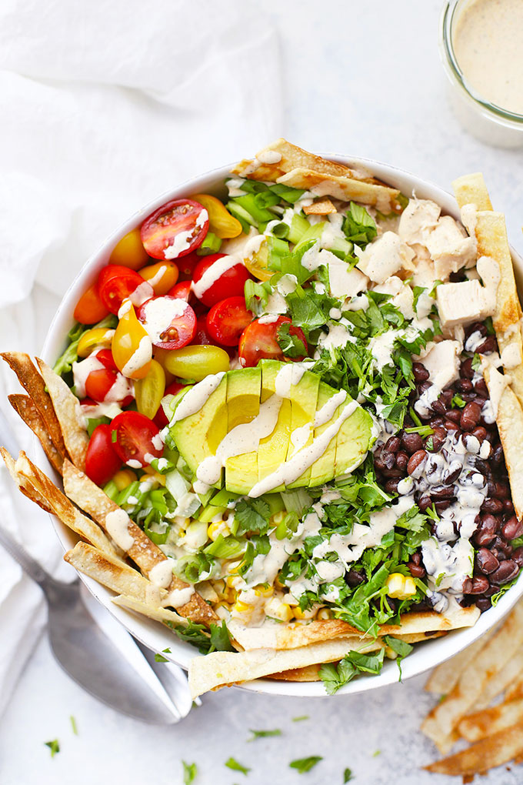

Southwest Chicken Salad with Southwest Ranch Dressing

Southwest Chicken Salad - This Chicken Taco Salad is fresh, fast & flavorful. With bright colors, bold flavors,
and an amazing Southwest Ranch Dressing, it's one of my favorite warm weather dinners! (Gluten free,
paleo-friendly)
How to Make Southwest Chicken Salad
Ingredients
For the Chopped Salad:
- 6 cups romaine lettuce
- 8 oz diced chicken
- 1 cup black beans
- 1 cup corn
- 1 cup halved grape or cherry tomatoes
- 1 avocado
- 1/2 cup sliced green onion
- 1/4 cup cilantro
- Tortilla strips*, tortilla chips, or pepitas
For the Southwest Ranch Dressing:
- 3/4 cup mayonnaise (I like avocado oil mayo)
- Juice from 1 lime (1-2 Tbsp)
- 1-2 Tbsp water
- 1 tsp chili powder
- 1/2 tsp dried dill (or 1 Tbsp fresh)
- 1/2 tsp pepper
- 1/4 tsp salt
- 1/4 tsp chipotle chili powder (optional-it adds some kick!)
Instructions
Assemble the salad:
- In a large bowl, combine lettuce, chicken, black beans, corn, tomatoes, avocado, green onion, and cilantro.
- Drizzle with salad dressing and serve with tortilla strips, chips, or pepitas.
Make the Dressing:
- In a small bowl or jar, whisk together mayonnaise, lime juice, 1 Tbsp water, chili powder, dill, pepper,
salt,
and chipotle chili powder.
- Whisk until it's totally smooth. Dressing will keep in the fridge about 1 week.
Nutrition Facts
Serves 6
Serving Size: 1.5 cup
Calories Per Serving: 352
|
|
|
|
|
| Total Fat 25.9g |
33% |
|
Cholesterol 44.1mg |
15% |
| Sodium 473.6mg |
21% |
|
Total Carbohydrate 17.2g |
6% |
| Dietary Fiber 6.5g |
23% |
|
Sugars 4.3g |
|
| Protein 15.5g |
31% |
*To make homemade tortilla strips, brush or spray 4 corn tortillas with olive oil. Slice into 1/2″ strips and
arrange on a baking sheet so they're not touching. (More air circulation will give crispier strips). Broil 3-5
minutes per side, or until they're golden and browning.